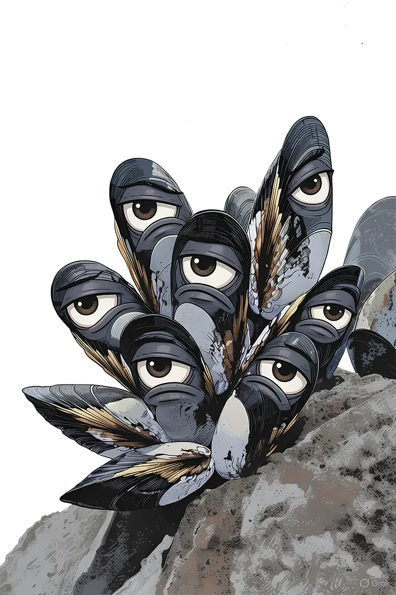

Raté. Le principe d'une épreuve inutile, c'est que ça ne s'anticipe pas : pas de règles à réviser, pas de coach, pas de technique secrète.

Tu découvriras les épreuves le jour J, comme tout le monde. D'ici là : repos complet, et surtout, aucune préparation.